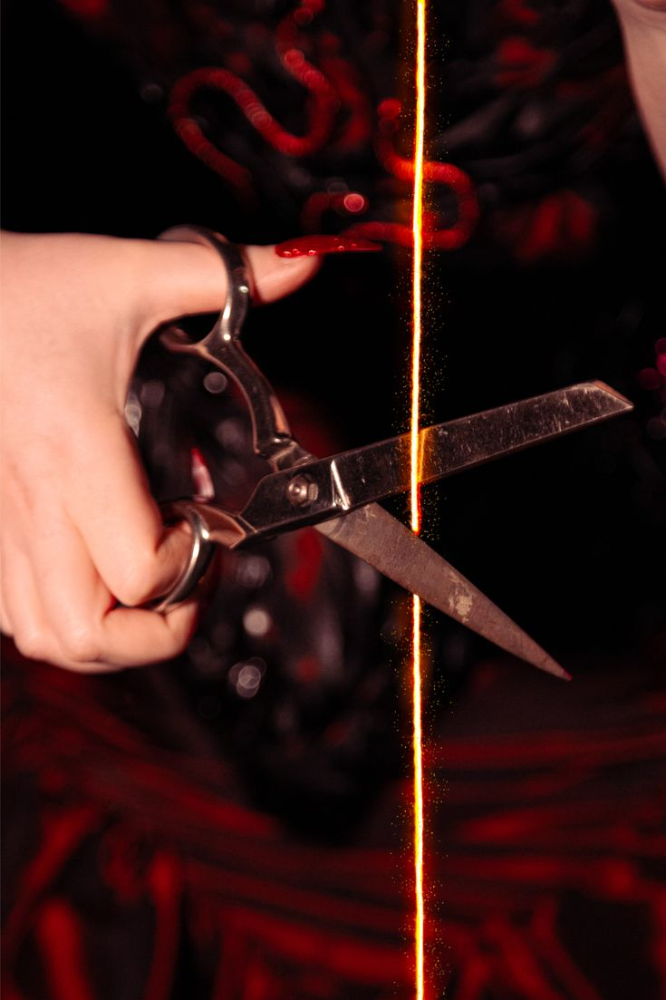

⛤ Letra ⛤
Vou cair como um anjo
Que não soube obedecer
Se cair, me levanto
Carta treze, vou renascer
Morte, vem pra limpar
Tudo que não pode ficar
É tão linda
O jeito que leva
Tudo o que tem que acabar
Nossa sina
Nem tudo começa
Mas tudo tem que acabar
Tento não chorar
Quando você chamar
Me espera
Que eu vou chegar lá
Vou subir como um santo (ah)
A jornada é longa
Vou queimar com o bando
Como pagãos na fogueira eu ando
Morte, vem libertar
Das ideias que vem amarrar
É tão linda
O jeito que leva
Tudo o que tem que acabar
Nossa sina
Nem tudo começa
Mas tudo tem que acabar
Tento não chorar
Quando você chamar
Me espera
Tenho pressa de viver
Tenho calma pra fazer
Eu não busco o fim
Mas sei que ele busca por mim
Mal comecei a jornada
Desde louco
Eu sabia que ia terminar
Todas as cartas na mesa
E elas me levam pro mesmo lugar
Sem pressa
Vou te encontrar, vou te encontrar
É tão linda
O jeito que leva
Tudo o que tem que acabar
Nossa sina
Nem tudo começa
Mas tudo tem que acabar
É tão linda
Nossa sina
Tenho pressa de viver
Tenho calma pra morrer
Eu não busco o fim
Mas sei que ele busca por mim
☾ Imagens ilustrativas ☽

(clique aqui!)